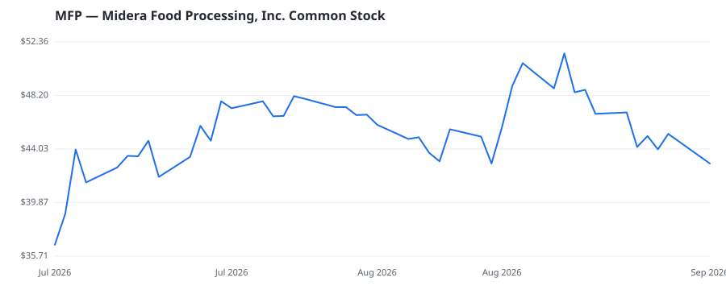

bullish · bearish · n/a — dots: price>SMA10 · SMA10>SMA50 · SMA50>SMA200 · up>down volume (20d)
Other · mid cap

Midera Food Processing Inc provides food processing equipment and automation solutions for industrial protein, bakery, and snack producers, delivering total line solutions from preparation and thermal processing through packaging. The company operates through a portfolio of brands and serves food processors globally. It serves various international food processing companies and producers of protein products, such as bacon, charcuterie, sausage and hot dogs, egg bites, poultry, alternative protein, lunch meat and pet food, and producers of bakery products, such as bread and buns, artisan bread, · website